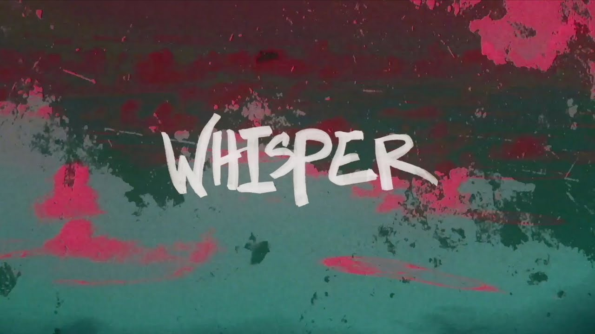

Current Favorite Song
Song: Whisper Artist: Boombox Cartel 
Audio Track
Whisper - Boombox Cartel
[Verse 1] All around me smoke is heavy Going down deep, I'm not ready The world is burning but I don't even care I'm just waiting for you to be there Sirens are screaming and I just can't relax (just can't relax) Currents are strong and you're pulling me back [Pre-Chorus] 'Cause when I fall and hit the wall The only escape is your voice in the rain And that's when you whisper [Chorus] And that's when you whisper And that's when you whisper [Verse 2] Used to be so insecure Always drowning in the storm The sky is falling but you held up the air Now I'm feeling you everywhere Sirens are screaming and I just can't relax (just can't relax) Currents are strong and you're pulling me back [Pre-Chorus] 'Cause when I fall and hit the wall The only escape is your voice in the rain And that's when you whisper
Copyright Information
This webpage was produced for the class Introduction to Web Design & Development with the University of Montana, School of Media Arts. ©
Wonder is everywhere!
University of Montana School of Media Arts, McGill Hall Rm 224 32 Campus Dr Missoula, MT 59812